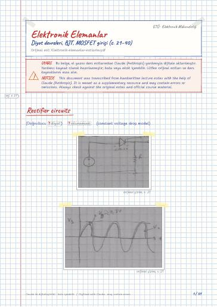

Electronic Devices · Digital lecture note
Diode circuits, BJT, introduction to MOSFET (pp. 21–40)
Elektronik Elemanlar – Diyot devreleri, BJT, MOSFET girişi (s. 21–40)
- Course
- Electronic Devices (ELM231)
- Semester
- Semester 3 · Fall 2022–23
- Format
- PDF · 39 pages · 8.0 MB · handwriting-style LaTeX
- Language
- Turkish
- Original note
- Elektronik-elemanlar-notlarim.pdf
Open the PDF (8.0 MB)LaTeX source (.tex)Original handwritten note

What is in this note?
Section headings of the note (in Turkish):
- Rectifier circuits
- The bridge rectifier
- Block diagram of a dc power supply
- The rectifier with a filter capacitor: The peak rectifier
- Limiting and Clamping Circuit
- The clamped Capacitor or DC restorer
- The voltage Doubler
- Special Diode Types
- The Schottky Barrier Diode (SBD)
- Tunnel Diode (Esaki Diode)
- Shockley Diode
- Varactors
- photo Diode
- LED
- Bipolar Junction Transistor (BJT)
- BJT Modes of Operation
- BJT Large Signal Equivalent models in Forward Active
- Saturasyon
- BJT Circuits
- BJT Circuits at DC
- Saturation
- MOSFET
- Genel bilgi
Text of the note
Show as plain text (Turkish; formulas and drawings are not included)
(Doğrultucu ) (constant voltage drop model)
PIV: Peak inverse Diode voltage (Diyot ters gerilimin tepe değeri)
PIV: V_s ⇒ nasıl bulunur, diyot kesimdeyken
In positive cycle D_2 is off
N_1 ve N_2 sarım sayısı
noktalar aynı yerde ise 1. denklem artı,
akımlar aynı noktadan çıkıyorsa 2. -
The bridge rectifier
Block diagram of a dc power supply
(Başlığın altında okunamayan küçük bir not: .)
The rectifier with a filter capacitor: The peak rectifier
Limiting and Clamping Circuit
Limiting occurs when the diodes are conducting
(Sayfanın en üstünde silik küçük bir not: ``zener diyot diyotun ''.)
The clamped Capacitor or DC restorer
The voltage Doubler
Special Diode Types
The Schottky Barrier Diode (SBD)
→ power supply (switched mode)
Tunnel Diode (Esaki Diode)
→ Voltage variable capacitors
Light Photo Diode Electrical signal
Electrical LED Light
(Sayfanın en üstünde ortada silik küçük bir başlık: .)
Bipolar Junction Transistor (BJT)
(Başlığın altında silik küçük notlar: ; .)
BJT Modes of Operation
(Kırmızı bir parantez Cut off ve Saturation satırlarını bu nota bağlıyor.)
Elektrik alanın etkisiyle i_E > i_C V_CB > V_BE
p bölgesinde recombinasyonu önlemek için çok küçük
akım yönü elektron hareketiyle ters, boşluk hareketiyle aynı yönde
I_B=I_Cβ → Common Emitter Current Gain
p bölgesinde az katkılama yapılır böylece boşluk sayısı az olur ve recombinasyonun önüne geçer.
A_E = Base Emitter Junction Cross sectional Area
W = Effective Base Width.
(Sol kenarda mavi, altı çizili: .)
BJT Large Signal Equivalent models in Forward Active
npn transistor V_T = 25 mV
aynı koşulları sağlayan kaç olmalıdır akım kaynağı yerine
Operation in the saturation mode
V_CE sat = 0,3 V at the edge of saturation
(Sayfa üstünde, altı çizili: ``ders 7''.)
(Sol kenarda küçük, altı çizili: ``Sayfa 321''.)
Base gerilimi referans alırsak 0,4 V aşağına düşmesini Aktif mod için sayabiliriz. Daha fazla düşerse saturasyon olur.
aktif çıkmazsa göre çözmek lazım ve V_CE sat 'ı belirlemek lazım V_CE = 0,2 V
(Süslü parantezin altında silik küçük bir not: .)
at the edge of saturation
deep saturation β_forced = 10
b) at the edge of sat
c) deep saturation → β_force = 10
(Başlığın solunda küçük, altı çizili bir sayı: .)
BJT Circuits at DC
V_CE Aktif o zaman yanlışClaude notu: el yazısında bu satırdaki rakamlar tam okunamadı (1,6 ya da 1,61; sonuç yaklaşık 2,4–2,5 V).
( I_B,C,E ifadesinin altında küçük bir ``0'' yazıyor.)
0,7- aktif mod değil
(Başlığın altında mavi, altı çizili: ``sf: 345''.)
(Çizimin altında altı çizili iki satırlık not: .)
akım söylediğiniz yönde çıkmadı
(Metal oxide semiconductor field effect Transistor)
(Sol kenarda oval içinde küçük bir not: .)
Source ve drain yer değiştirebilir çünkü simetriktir.
(Sağ tarafta altı çizili bir başlık: .)
Unipolar tek kutupludur
Enhancement → kanal oluşmalı
Threshold Voltage (Eşik seviyesi)
V_GS 'ye uygulanmalı → V_t , V_TH
karışmamalı: V_T = kT/q (farklı)